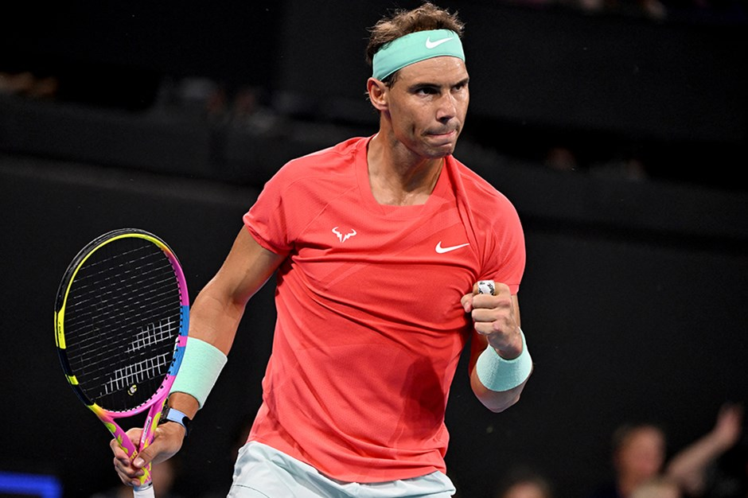
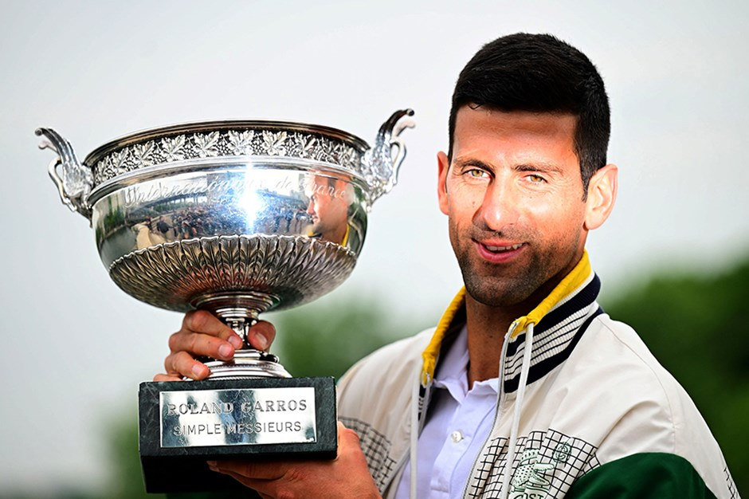
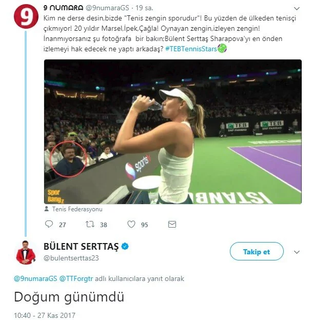
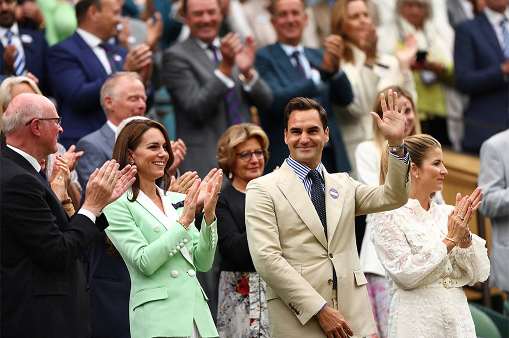
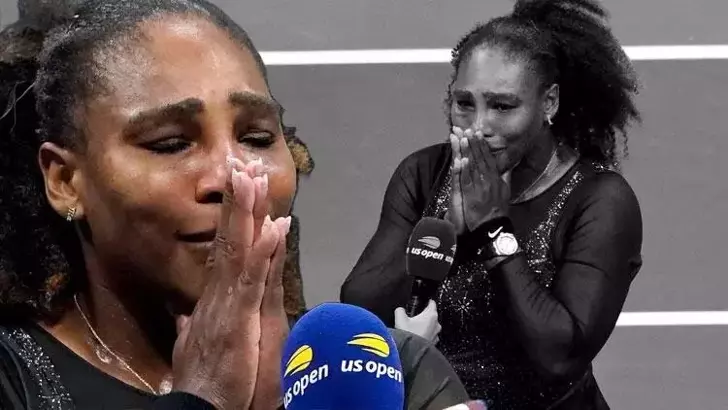

Rafael Nadal yaklaşık 1 yıl sonra galibiyetle döndü

Sakatlığını atlatan ve yaklaşık 1 yıl sonra kortlara dönen Rafael Nadal, Uluslararası Brisbane Turnuvası ilk turunda Dominic Thiem'i 2-0 mağlup etti.
Kariyerinde 22 grand slam şampiyonluğu bulunan Nadal, Avustralya'da düzenlenen ATP 250 turnuvası Uluslararası Brisbane'in ilk tur mücadelesiyle 349 gün sonra kortlara döndü.
Dünya klasmanının 98. basamağındaki 2020 ABD Açık şampiyonu Thiem ile karşılaşan 37 yaşındaki Nadal, bir saat 29 dakika sonunda 7-5 ve 6-1'lik setlerle 2-0 galip geldi. Nadal, özel davetle katıldığı turnuvanın ikinci turunda Aslan Karatsev-Jason Kubler eşleşmesinin galibiyle mücadele edecek.
Teniste 2023 yılına Novak Djokovic damgası

36 yaşındaki Novak Djokovic, performansıyla 2023 yılına damga vurdu. Novak Djokovic aynı takvim yılında Wimbledon hariç tüm grand slam turnuvalarını kazandı.
Teniste ilerleyen yaşına rağmen elde ettiği başarılarla zirveden inmeyen Sırp raket Novak Djokovic, performansıyla 2023'e de damgasını vurdu.
Sırp raket, büyük çekişmeye sahne olan Wimbledon finalinde ise Alcaraz'a 3-2 yenilerek Londra'da 8. şampiyonluğun kapısından döndü.
ATP Sezon Sonu Finallerinde İtalyan Jannik Sinner'i 2-0 yenerek 7. şampiyonluğunu elde eden Djokovic, İsviçreli Roger Federer'i geride bıraktı ve bu alanda da zirveye tek başına yerleşti.
Bülent Serttaş'ın tenis maçına gitmesi olay oldu.

Bülent Serttaş'ı hedef gösteren bir twitter sayfasına Bülent Serttaş'tan cevap geldi. Serttaş'ın cevabı "Doğum günümdü" oldu.
Roger Federer'e Wimbledon'da coşkulu karşılama

Tenisin efsane isimlerinden Roger Federer, emeklilik kararınında ilk kez Wimbledon'da yer aldı.
Federer, tek kadınlarda Shelby Rogers ve son şampiyon Elena Rybakina arasındaki karşılaşmayı takip etti
Serena Williams gözyaşları içerisinde tenise veda etti!

Amerika Açık'ın son turnuvası olacağını daha önce açıklayan Serena Williams, üçüncü tur maçında Avustralyalı Ajla Tomljanovic'e nefes kesen bir maç sonunda mağlup olarak turnuvaya ve tenis kariyerine veda etti. Tarihin en büyüğü olarak gösterilen Serena Williams, maç sonunda gözyaşlarını tutamadı.
Kariyerinin son turnuvası olan Amerika Açık'ın ilk turunda Danka Kovinic'i 6-3'lük iki setle 2-0 geçen, ikinci turda dünya 2 numarası Anett Kontaveit'i 7-6, 2-6 ve 6-2'lik setler sonucu 2-1 yenen Serena Williams için veda üçüncü turda yaşandı. 40 yaşındaki Amerikalı raket, üçüncü tur maçında Avustralyalı rakibi Ajla Tomljanovic'e 7-5, 6-7, 6-1'lik setler sonucu 2-1 yenilerek turnuvadan elenip tenis kariyerine nokta koymuş oldu.